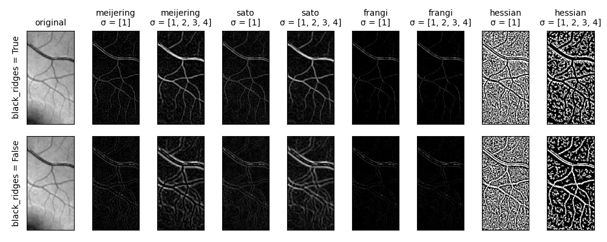

Source
SourceNote
Click here to download the full example code or to run this example in your browser via Binder
Ridge operators¶
Ridge filters can be used to detect ridge-like structures, such as neurites [1], tubes [2], vessels [3], wrinkles [4] or rivers.
Different ridge filters may be suited for detecting different structures, e.g., depending on contrast or noise level.
The present class of ridge filters relies on the eigenvalues of the Hessian matrix of image intensities to detect ridge structures where the intensity changes perpendicular but not along the structure.
References¶
from skimage import data
from skimage import color
from skimage.filters import meijering, sato, frangi, hessian
import matplotlib.pyplot as plt
def original(image, **kwargs):
"""Return the original image, ignoring any kwargs."""
return image
image = color.rgb2gray(data.retina())[300:700, 700:900]
cmap = plt.cm.gray
plt.rcParams["axes.titlesize"] = "medium"
axes = plt.figure(figsize=(10, 4)).subplots(2, 9)
for i, black_ridges in enumerate([True, False]):
for j, (func, sigmas) in enumerate([
(original, None),
(meijering, [1]),
(meijering, range(1, 5)),
(sato, [1]),
(sato, range(1, 5)),
(frangi, [1]),
(frangi, range(1, 5)),
(hessian, [1]),
(hessian, range(1, 5)),
]):
result = func(image, black_ridges=black_ridges, sigmas=sigmas)
axes[i, j].imshow(result, cmap=cmap)
if i == 0:
title = func.__name__
if sigmas:
title += f"\n\N{GREEK SMALL LETTER SIGMA} = {list(sigmas)}"
axes[i, j].set_title(title)
if j == 0:
axes[i, j].set_ylabel(f'{black_ridges = }')
axes[i, j].set_xticks([])
axes[i, j].set_yticks([])
plt.tight_layout()
plt.show()
Total running time of the script: ( 0 minutes 1.689 seconds)